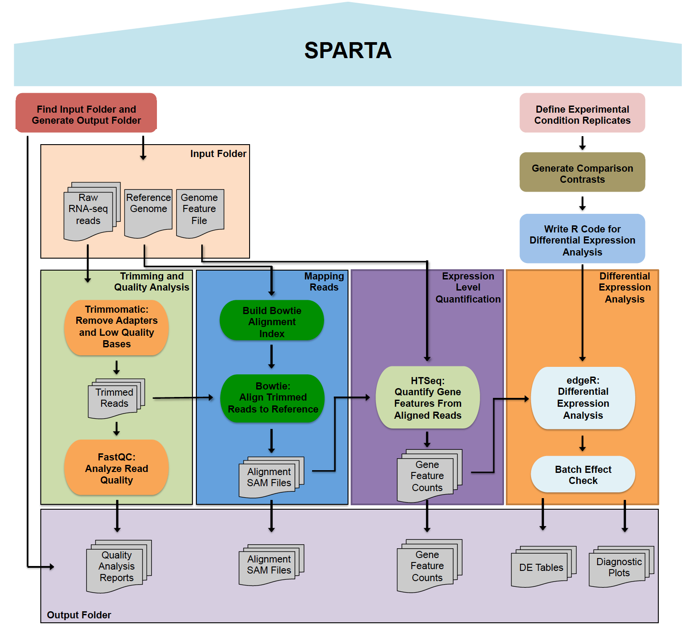

SPARTA: Simple Program for Automated reference-based bacterial RNA-seq Transcriptome Analysis¶
SPARTA is a workflow aimed at analyzing single-end Illumina RNA-seq data. The software is supported on Windows, Mac OS X, and Linux platforms. The workflow combines several tools: Trimmomatic (read trimming/adapter removal), FastQC (read quality analysis), Bowtie (mapping reads to the reference genome), HTSeq (transcript/gene feature abundance counting), and edgeR (differential gene expression analysis). Within the differential gene expression analysis step, batch effects can be detected and the user is warned of the potential, unintended additional variable. The analysis procedure is outlined below.
How to get and use SPARTA:¶
Mac Users - Mac OS X tutorial
Windows Users - Windows tutorial
Linux Users - Linux tutorial
Contents:¶
Contribute: If you would like to contribute to the project, the source code for each platform can be found in the GitHub repository.
- Bugs: If you found a bug, please have a look at the issues page and add a description (please be explicit and include error message if possible) of the bug/error.